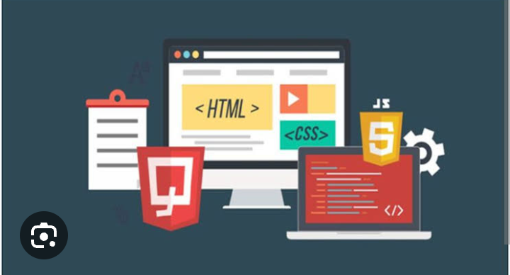
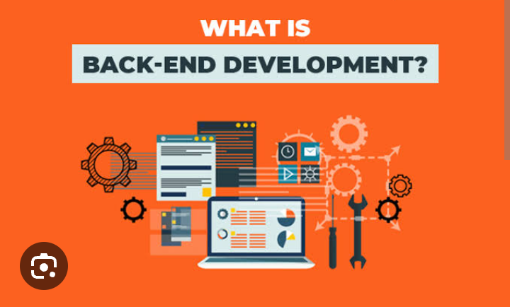
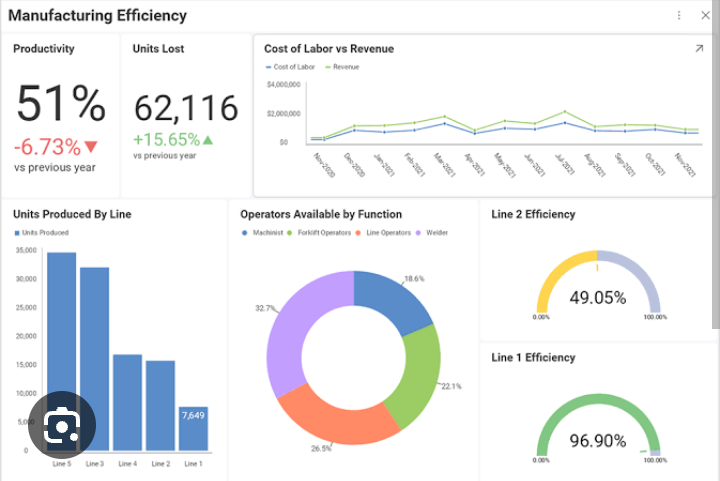
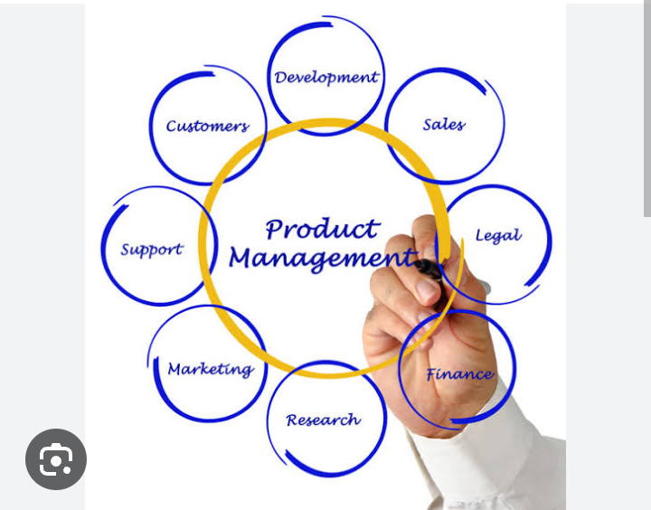

These are the courses we offer here in Tech with Fave
1.Front-end web development

Front-end development primarily focuses on user experience. Using the related coding and design techniques, you as front-end developers build the elements of an application that are directly accessed by end-users with a goal of rendering the entire interface elegant, easy to use, fast, and secure, fostering user engagement and interaction.
Thanks to the latest design and technology trends geared for the front end, you can build increasingly more sophisticated designs and interaction patterns. Simultaneously, however, more complexity results, so much so that front-end development has become a specialized field that requires deep expertise.
The major trend in front-end development in recent years is the growth of applications for mobile and smart devices, with users accessing applications from a growing number of devices with different screen sizes and interaction options. As a result, front-end developers must ensure their application delivers a consistent, high-quality user experience for all devices and usage scenarios. That’s a daunting challenge.
Read more
2.Back-end web development

Back-end developers are the experts who build and maintain the mechanisms that process data and perform actions on websites. Unlike front-end developers, who control everything you can see on a website, back-end developers are involved in data storage, security, and other server-side functions that you cannot see.
Since the late 80s and 90s, the internet has transformed the way humans access information, and web development has continued to evolve. Its central importance to our digital world means web developers are in high demand. Fortunately, anyone can learn the technical skills needed to be front-end, back-end, or full-stack (both front- and back-end) developers.
Back-end development means working on server-side software, which focuses on everything you can’t see on a website. Back-end developers ensure the website performs correctly, focusing on databases, back-end logic, application programming interface (APIs), architecture, and servers. They use code that helps browsers communicate with databases, store, understand, and delete data.
On a team, back-end developers collaborate with front-end developers, product managers, principal architects, and website testers to build the structure of a website or mobile app. Back-end developers must be familiar with many kinds of tools and frameworks, including languages such as Python, Java, and Ruby. They make sure the back-end performs quickly and responsively to front-end user requests.
Back-end developers are required to have technical expertise, analytical thinking, and excellent collaboration skills. As a back-end web developer, you should be able to work independently to design the web infrastructure.
Read more
3.Data analysis

Although many groups, organizations, and experts have different ways of approaching data analysis, most of them can be distilled into a one-size-fits-all definition. Data analysis is the process of cleaning, changing, and processing raw data and extracting actionable, relevant information that helps businesses make informed decisions. The procedure helps reduce the risks inherent in decision-making by providing useful insights and statistics, often presented in charts, images, tables, and graphs.
Read more
4.Product Design
A Product Designer helps to define the experience and interface of products (also known as ‘User Experience’ or UX and ‘User Interface’ or UI) while defining the brand and marketing strategy around those products. Essentially, it is creating a brand and executing that identity through every phase of the product or services’ lifespan and design strategy – aesthetically, experientially, tactilely, ergonomically, and technologically speaking, of course.
Due to the vast (and ever-changing) demands of the Product Designer, it is by definition a rather elusive job role to describe: because the design process of product development keeps changing, the roles of people (and consequent skills sets) continue to evolve, thus encompassing a wider scope of responsibilities. Because of this, it is important that anyone entering the field have the proper hands-on training with a respectable design program. While Visual Designers address the look and feel of a product, UX or UI Designers deal with wireframes and user flows. However, the Product Designer is an individual who can take a high-level concept and see it all the way through, from inception to completion.
Responsible for designing nearly everything we use in our daily lives, Product Designers utilize their creativity, technical knowledge and keen eye for detail to design and implement new and innovative products and services, as well as streamlining existing products by improving their aesthetic appeal and functionality. In order to succeed in product design, you must understand the relationship between art, technology, and science. As a Product Designer, your responsibilities will include planning, designing, and modeling products, creating prototypes and conducting research, as well as rigorous product testing.
Read more
5.Product management

Product management is the business process of planning, developing, launching, and managing a product or service. It includes the entire lifecycle of a product, from ideation to development to go to market. Product managers are responsible for ensuring that a product meets the needs of its target market and contributes to the business strategy, while managing a product or products at all stages of the product lifecycle.Software product management adapts the fundamentals of product management for digital products.
Read more